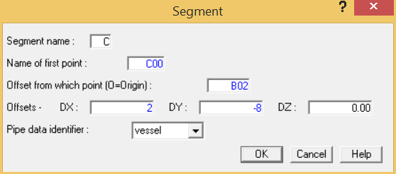
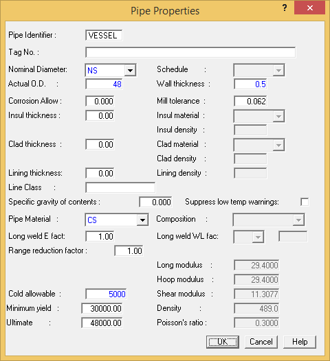
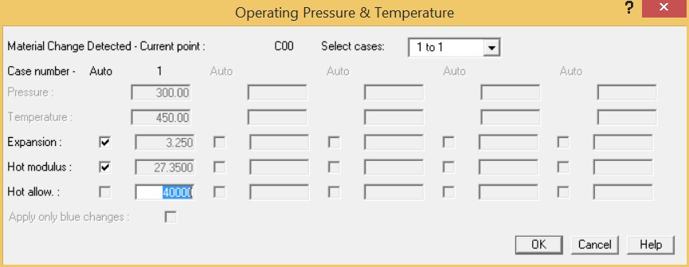
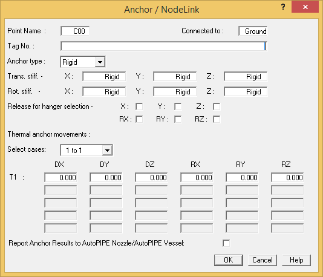
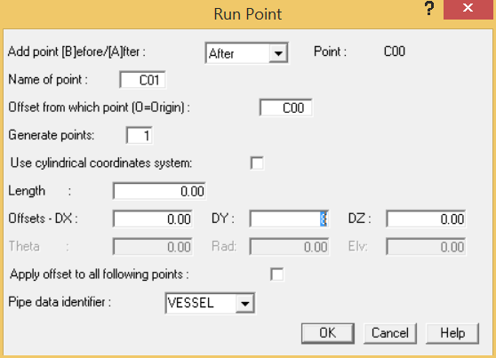
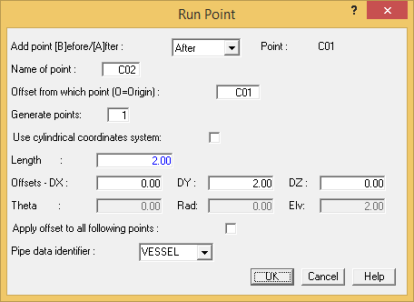

Creating a New Disconnected Segment
Now you will build a pressure vessel by defining it as a new segment of pipe disconnected from the current piping.
.png) 1. Select Insert >
Piping Components > Segment to open the dialog shown
below.
1. Select Insert >
Piping Components > Segment to open the dialog shown
below.

- When inserting a new segment, AutoPIPE assumes you want the first point to be the current active point (in this case: B02). In order to create a new disconnected point in space, you must override the Name of first point from B02 to C00, which is a point name not previously defined. Tab once to the Name of first point field and enter the name C00. Tab again to the Offset from which point field and enter the name B02. The default is to offset from the origin (0,0,0).
- You will start the segment at the base of the vessel and input X,Y,Z offsets of the new segment from the point B02. You are inputting coordinates offsets to the base of the vessel. Tab to the DX offset and enter 2 feet {600} mm.
- In the DY offset field, enter – 8 {-2400}.
- Tab twice to the Pipe data identifier field and type vessel. The pressure vessel will be modeled as a large diameter pipe with a new Pipe identifier name and different properties from the current 6P1. By typing in a new Pipe data identifier name, AutoPIPE will automatically display the Pipe Properties dialog so that you can assign properties to the vessel.
- Press OK to close the dialog.
The Pipe Properties dialog is automatically displayed. You will define the vessel as having non- standard nominal diameter, with an actual O.D. of 48 inches {1200} mm and a ½” {12.7} mm wall thickness as shown below.

- From the Nominal diameter selection list, choose the NS option.
- Input 48 inches {1200} mm in the Actual O.D. field.
- Input 0.5 inches {12.7} mm in the Wall thickness field.
- From the Pipe Material selection list, choose the CS option. A warning message will be displayed to indicate that CS is a generic material with no allowable stresses defined. Press OK to close the message.
- Replace the default cold allowable stress of 13700 psi {82.74} N/mm2. Highlight this value, and then input 50000 {5000} in the Cold allowable (ambient allowable) field. Press OK to close the dialog.
- The Operating Pressure & Temperature dialog is displayed.

- Input 40000 {4000} in the Hot allow field. Press OK to close the dialog.
- Select Insert > Supports > Anchor/NodeLink to display the Anchor/NodeLink dialog shown below. This step allows us to anchor the base of the vessel.

- Click the OK button to accept defaults for the anchor
-
.png) You will now build the vertical
vessel using our newly defined large diameter Vessel pipe
identifier. Select Insert > Piping Components >
Run to display the Run Point dialog shown in the
following figure.
You will now build the vertical
vessel using our newly defined large diameter Vessel pipe
identifier. Select Insert > Piping Components >
Run to display the Run Point dialog shown in the
following figure.

- You will now define the critical points of the vessel. Since you will later connect a nozzle to this vessel, you need to create a point at the same elevation where the nozzle will be placed. In the DY offset field, enter 8 feet {2400} mm and then press OK.
-
.png) You will now input a run point
to define the top of the vessel. It is not always necessary to
specify offsets. Since AutoPIPE keeps track of the segment
direction, you need to enter only the length to the top of the
vessel. Select Insert > Piping Components >
Run again. When the dialog appears, input a value of
2 feet {600} mm in the Length field.
You will now input a run point
to define the top of the vessel. It is not always necessary to
specify offsets. Since AutoPIPE keeps track of the segment
direction, you need to enter only the length to the top of the
vessel. Select Insert > Piping Components >
Run again. When the dialog appears, input a value of
2 feet {600} mm in the Length field.

- Press OK to close the dialog. The model appears as shown in the following figure.